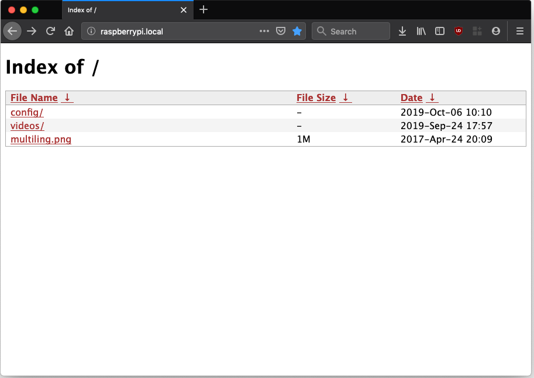
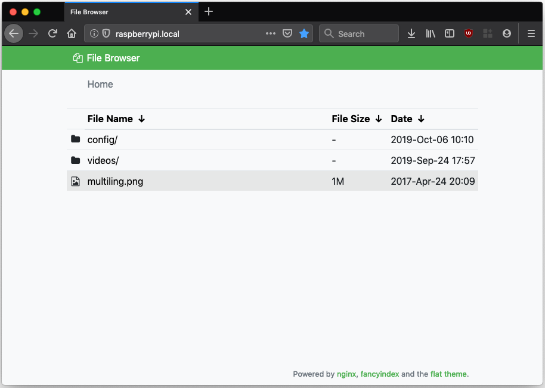

We will create a simple file server on a GNU/Linux installation. The aim is to have a bare-bones server that provides read-write access using the SMB protocol (the technology that Microsoft uses for its network shares) and (optionally) read-only access over HTTP, so that any device on the network can fetch files or stream media while only needing a web browser.
Table of Contents
Prerequisites
- A computer running Debian or a derivative distribution such as Ubuntu or Raspbian (Raspberry Pi).
- A way to connect said computer to the local network (WiFi/Ethernet).
- Ample disk space to store your files.
Samba
We will use Samba to provide file-sharing services to our devices. Before installing it, we will set up our folders.
Creating the Media folder
First, create a new folder to serve as your media directory:
sudo mkdir /share
sudo chown username:username /share
In the second command, replace username with the username
you want to use on your system. If your username is mark, use
mark:mark. On Raspbian, you will probably want to use pi:pi.
Installation
To begin, update your Apt repositories:
sudo apt update
Then, install Samba using:
sudo apt install samba samba-common-bin
Configuration
Once installed, configure Samba to serve your files. To do this, edit Samba's configuration file using your preferred editor:
sudo nano /etc/samba/smb.conf
Add the following to this file:
[share]
path = /share
writeable=Yes
public=no
create mask=0777
directory mask=0777
Here, [share] refers to the name of the Samba share you created. This
share will be accessible from other machines on the address
\\HOSTNAME\share, where HOSTNAME is the actual hostname of your
server.
path defines the location of the shared directory on the filesystem.
Here, it refers to the directory you created earlier.
writable decides whether the folder is modifiable when accessed using
Samba.
public is set to no, which means that a
username and password will be required to access the share. If you wish to
enable anonymous, passwordless login, change it to yes.
Save the file. You are now ready to create a username and password for
accessing the share. Note that if you set up a public share using
public=yes in this step, you can skip the following section.
Creating a Samba user
To create a username and password for accessing your share, use the
smbpasswd command. Replace username with the name that you wish to use:
sudo smbpasswd -a username
After pressing Enter, you will be prompted to set a password for this user.
Applying Changes and Enabling the SMBD Service
To apply your changes, first restart the smbd (Samba) service:
sudo systemctl restart smbd
To make the service start up every time at boot, you need to enable it:
sudo systemctl enable smbd
Accessing the Server
To access the server using Samba, you need either the server's local IP address, or the hostname. If you know what those are for your server, you can jump to the Using Windows or Using macOS sections.
Finding Out the Server Address
Most modern routers let you access a device on the network using the
scheme hostname.local, where "hostname" is to be replaced by your
server's actual hostname. Usually, all you need to do to find that out
is to run the hostname command on the server:
hostname
In my case, the output is "raspberrypi", since I'm using a
Raspberry Pi as the test device. I can ideally access my share using the
address raspberrypi.local.
If the above method does not work on your network, you will need the
local IP address of your server. Again, use the hostname
command, but with the -I flag, like so:
hostname -I
You will get an address like 192.168.1.15 or 10.0.0.6. Note it down.
Using Windows
Open up Windows Explorer. In the address bar, type in
\\hostname.local\share, replacing "hostname" with your server's
hostname (or \\IP address\share if that does not work). You will be
prompted to enter a username and password to access the share. Use the
credentials you set when creating the Samba user in the Creating a Samba user section.
Using macOS
Open Finder. In the toolbar on the top, select
Go->Connect to Server.... In the address bar, type in
smb://hostname.local/share, replacing "hostname" with your server's
hostname (or smb://IP address/share if that does not work). You will
be prompted to enter a username and password to access the share. Use
the credentials you set when creating the Samba user in the Creating a Samba user section.
You can choose to save the credentials and add this folder to your
Favorites for easier access in the future.
You are now all set to use your new file/media server as you please. Of course, you can also access your server using your Android devices (look for a file manager that supports the SMB/Samba protocol). iOS devices can also access it using the built-in Files app.
That is it for the file server guide if all you need is SMB access. If you would prefer to access your server using a web browser, keep reading.
Optional: Enabling Web/http Access Using NGINX
To enable web access, you will need a web server. In this guide, we will use NGINX because it is relatively lightweight and simple to configure.
Installation and Configuration
To install NGINX, run:
sudo apt install nginx-full
To configure the server, first make sure that NGINX's "Fancy indexes" setting is enabled:
file /etc/nginx/modules-enabled/50-mod-http-fancyindex.conf
If you get an output like cannot open ...50-mod-http-fancyindex.conf (No such file or directory), enable the fancy indexes module by running:
sudo ln -s /usr/share/nginx/modules-available/mod-http-fancyindex.conf /etc/nginx/modules-enabled/50-mod-http-fancyindex.conf
Serving the "/share" Directory
The config file for the default NGINX vhost is /etc/nginx/sites-enabled/default, which in turn is a symlink to /etc/nginx/sites-available/default.
sudo nano /etc/nginx/sites-available/default
For our setup, replace its contents with the following:
server {
# The default port to listen on
listen 80 default_server;
listen [::]:80 default_server;
# Change root directory to our file server's root
root /share;
index index.html index.htm;
server_name _;
location / {
# First attempt to serve request as file, then
# as directory, then fall back to displaying a 404.
try_files $uri $uri/ =404;
#Fancy index settings:
fancyindex on; # Enable fancy indexes.
fancyindex_name_length 255; # Maximum length of a filename
fancyindex_localtime on;
fancyindex_exact_size off; # Output human-readable file sizes.
}
}
Modify the root parameter according to your requirements if you chose a different directory for your file server.
Now, start and enable the NGINX service:
sudo systemctl restart nginx
sudo systemctl enable nginx
If everything went well, you can now access your server with any web browser at http://hostname.local - replacing "hostname" with your server's actual hostname or local IP address.

Optional: Making Things Prettier
If the above image looks rather... dull to you, that's because it is (it would've looked worse had we not enabled Fancy indexes). Fortunately, there are plenty of themes available for a prettier, more usable directory listing. For this guide, we will use one called Flat theme.
Download the theme to your home directory using:
cd ~
wget https://github.com/alehaa/nginx-fancyindex-flat-theme/releases/download/v1.0/nginx-fancyindex-flat-theme.tar.gz
Once the download is complete, unpack the tar archive:
tar xvf ./nginx-fancyindex-flat-theme.tar.gz
You will now have a directory called flat-theme in your home folder. Move this to your server's root:
mv ./flat-theme /share/theme
Next, modify the /etc/nginx/sites-available/default file:
sudo nano /etc/nginx/sites-available/default
Scroll down to the location / { section in the file, and change it to this:
location / {
# First attempt to serve request as file, then
# as directory, then fall back to displaying a 404.
try_files $uri $uri/ =404;
#Fancy index settings
fancyindex on; # Enable fancy indexes.
fancyindex_name_length 255;
fancyindex_localtime on;
fancyindex_exact_size off; # Output human-readable file sizes.
# Settings for the theme:
fancyindex_header "/theme/header.html";
fancyindex_footer "/theme/footer.html";
fancyindex_show_path off;
# Make sure the "theme" folder is not displayed:
fancyindex_ignore "theme";
}
Finally, save the file and reload NGINX settings:
sudo systemctl reload nginx
Refresh the page on your browser, and you will see a much better looking, more usable file index:
